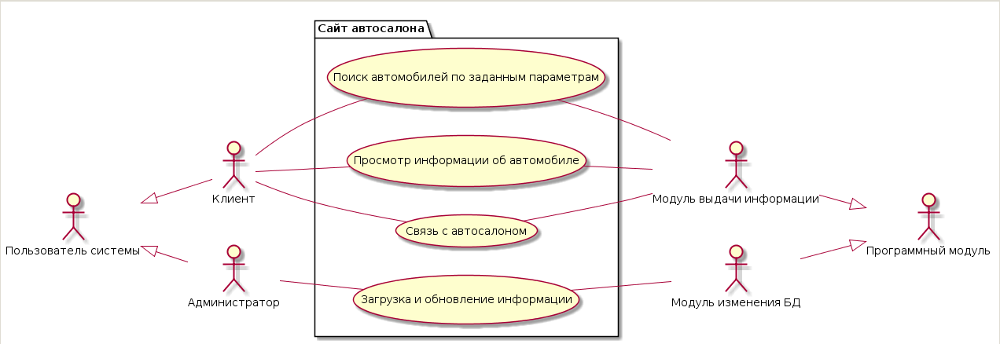
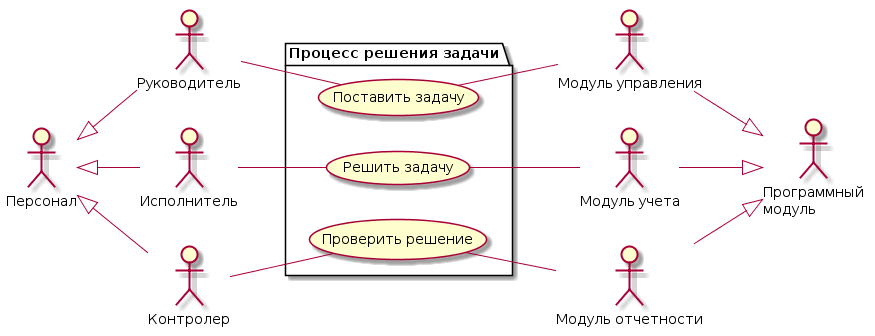
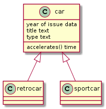
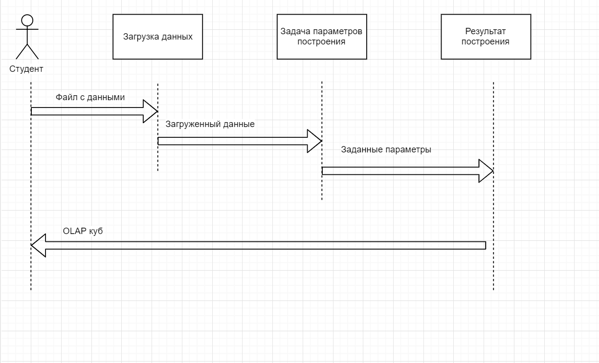
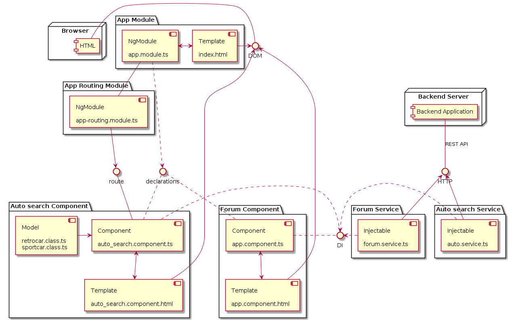

Лабораторная №1
1. Идентификатор прецедента
создание сайта для автосалона
2. Название прецедента
aut0.ru
3. Контекст
Повышение продаж в автосалоне ООО "KogalymSpeedSelling"
4. Участники (actors) и цели (goals)
| Участник | Категория | Цель (goal) |
| Директор | Внешний | Инициатор работ |
| Куратор | Внешний | Отслеживание хода работ |
| Аналитик | Основной | Проводит анализ автомобилий, характеристики которых будут размещены на сайте |
| Разработчик | Основной | Создание сайта |
| Visual Studio 2013 | Инструмент | Среда разработки |
| Хостинг | Инструмент | Предоставить платформы размещения |
5. Предусловия (pre-conditions)
- появление нужды создания сайта
- заключить договор о создании сайта, с уточнением срока работ, функционала сайта и т.д.
- изучить работу в Visual Studio
6. Постусловия (post-conditions)
- создан сайт
- на хостинге размещён сайт
- сданный сайт
7. Основной поток (main flow)
| Участник | Действие (activity) | Ожидаемый результат |
| Директор | Оформление заказа по написанию сайта | Сформированный заказ |
| Аналитик | Создание первичной БД с основными критериями автомобилей | Готовая БД |
| Разработчик | Написание сайта | созданный сайт выложенный на хостинге |
| Разработчик | Импломентирование полученной БД на сайт | Возможность выбора на сайте автомобиля по заданным параметрам |
| Куратор | Проверяет выполнение заданий | Проверка работы эллементов сайта |
8. Исключения (exceptions)> Что может пойти не так?
| Условие (риск) | Последствия | Реакция |
| Закончилось отведенное время | Недоделанная работа | Получение неустойки |
9. Альтернативы (alternates)
(?) Присутствует шаблон рабочего сайта, на котором имеются готовые рабочие функции, что
даёт нам возможность, осущиствить его адаптацию и сразу перейти к внидрению БД. (?)
10. Временные параметры
- Триггер (событие, стартующее прецедент): Заключённый договор на написание сайта
- Номинальная частота повторения прецедента: 1 раз в 5 лет * разработчиков (2)
- Продолжительность прецедента: 6 месяцев
Диаграмма использования сайта
код от диаграммы

Диаграмма решения задачи
код от диаграммы

Лабораторная №2
1. Роль в проекте
| Участник | Роль | Описание роли |
| Абакумцев Р.В. | Программист | --- |
| Ершов Д.С. | Аналитик | --- |
2. Проект
Разработка сайта для автосалона ООО "KogalymSpeedSelling"
3. Задача проекта
Повышение продаж в автосалоне ООО "KogalymSpeedSelling"
4. Риски
- Различия между ожиданием заказчика и готовым проектом
- Недостаточная квалификация разработчиков
5. Стратегии управления рисками
- Стратегии управления рисками
- Передача заказчику Beta-версии проекта
- Принятие
6. Мероприятия по устранению рисков
- Обучение разработчиков
- Получение отчётов по Beta версиям проекта
- Еженедельные встречи с заказчиком для обсуждения проекта
7. Канбан-доска (main flow)
| Инициализация | Выполнение работ | Проверка заказчиком | Исправление ошибок | Сдача проекта |
UML Class

Лабораторная №3
1. Определение прикладной задачи и основные требования к личной SPA
- Просмотр общей информации на каждый автомобиль в каталоге
- Подробный просмотр информации об автомобиле
- Отображение информации о наличии автомобиля
- Наличие контактных данных для связи
2. Пользовательская история
Как пользователь, я хочу иметь возможность сравнения просматриваемых автомобилей
Как пользователь, я хочу просматривать различные цвета просматриваемого автомобиля
3. Проведение классификации планируемого прототипа выбранной для коллективной разработки задачи
- Горизонтальный
- Эволюционный
- Электронный
UML Sequence
*изображение не относится к теме данной лабораторной

Лабораторная №4
1. Определить набор тестов к выбранной пользовательской истории
2. Определить допустимость дублирования функций
Из-за выбора одноразового прототипирования группового проекта, допускается дублирование функций
3. Определить допустимость "плохого кода"
По той же причине допускается наличие "плохого кода"
4. Определить способ учета технического долга
Причины возможного технического долга
- Нехватка времени
- Недостаток опыта
Сроки устранения
- Окончание учебного семестра
Способы устранения
- Использование свободного времени на обучение, для дельнейшего применения полученых навыков
- Привлечение более квалифицированных специалистов
UML диаграмма компонентов
